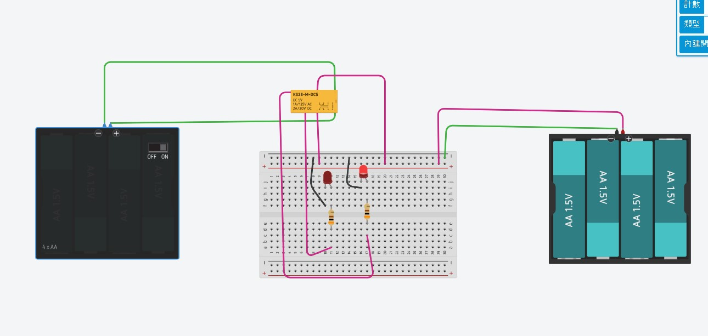

📸 原始電路設計圖檔 (Tinkercad Circuits 實作)
下圖為今日完成並於 Tinkercad Circuits 平台建構的完整雙電源 SPDT 繼電器互補控制電路接線圖：

🔬 繼電器雙路切換即時互動模擬器
點擊下方開關按鈕，即時觀察控制端通電激磁、磁力線生成、活動銜鐵擺動與 NC/NO 雙通道 LED 互補點亮的完整物理過程：
📚 核心概念與工作原理 (Core Concepts)
電磁繼電器是一種利用微小電氣訊號控制大電流或獨立電路通斷的自動開關。它藉由電磁鐵產生的磁場吸力推動機械接點，達成控制端與負載端之間百分之百的物理與電氣隔離 (Galvanic Isolation)。
1. 繼電器內部三大關鍵機構
- 電磁驅動系統 (Solenoid Coil & Core)：當直流電流流入線圈時，依據安培右手定則與畢奧-沙伐定律，鐵芯被迅速磁化產生強大磁吸力 $F_{\text{mag}} = \frac{B^2 A}{2\mu_0}$。
- 機械傳動與復位系統 (Armature & Spring)：可擺動的動鐵芯（銜鐵）受磁力吸引靠近鐵芯；斷電時則由復位彈簧將其拉回初始位置。
- 觸點切換系統 (SPDT / Form C Contacts)：包含公共端（COM）、常閉端（NC）與常開端（NO）。切換過程遵循「先斷後通 (Break-Before-Make)」原則，確保安全。
2. 電氣隔離 (Galvanic Isolation) 的核心價值
在工業自動化、車用電子與智慧家庭中，繼電器扮演關鍵的安全屏障：
- 跨電壓域控制：可以用 3.3V / 5V 的微控制器安全控制 110V/220V AC 交流電器。
- 雜訊阻絕：避免馬達、電感性負載產生的電磁干擾 (EMI) 或接地迴路雜訊逆灌回主控晶片。
🔌 硬體接線詳細剖析 (Detailed Wiring Breakdown)
對照實際電路照片（Tinkercad 實作），各模組接線與走線邏輯如下：
| 電路區塊 | 連接起點 (Source) | 連接終點 (Destination) | 導線顏色 | 功能與電氣特性說明 |
|---|---|---|---|---|
| 控制電源 (+) | 左側 6V 電池盒正極 (經開關) | 繼電器線圈正端 (Coil+) | 綠色 (Green) | 提供 5V~6V 激磁電壓與 ~48mA 驅動電流 |
| 控制電源 (-) | 左側 6V 電池盒負極 | 繼電器線圈負端 (Coil-) | 綠色 (Green) | 控制迴路接地 (與負載端電源完全隔離) |
| 負載電源 (+) | 右側 6V 電池盒正極 | 麵包板正極軌 / 繼電器 COM | 桃紅 (Magenta) | 為負載端提供獨立的 +6.0V 工作電壓 |
| 負載電源 (-) | 右側 6V 電池盒負極 | 麵包板負極軌 (GND2) | 綠色 (Green) | 負載迴路共用接地軌 |
| 常閉通道 (NC) | 繼電器 NC 接點 | 麵包板 Col 10 (LED 1 陽極) | 桃紅 (Magenta) | 開關 OFF 時導通，點亮 LED 1 |
| 常開通道 (NO) | 繼電器 NO 接點 | 麵包板 Col 17 (LED 2 陽極) | 桃紅 (Magenta) | 開關 ON 時吸合導通，點亮 LED 2 |
| LED 限流接地 | LED 1/2 陰極 (Col 11 / 16) | 限流電阻 220Ω $\to$ 負極軌 | 黑色跳線/電阻腳 | 限制 LED 工作電流至 ~18.2mA，防止燒毀 |
📊 運作狀態與真值表 (Operating States & Truth Table)
| 控制開關狀態 | 線圈電壓 ($V_{\text{coil}}$) | COM-NC 連接 | COM-NO 連接 | LED 1 (常閉通道) | LED 2 (常開通道) | 工作模式 |
|---|---|---|---|---|---|---|
| OFF (斷開) | 0 V (未通電) | 導通 (Closed) | 斷開 (Open) | 🔴 亮 (ON) | ⚫ 滅 (OFF) | 常態待機指示 (Standby) |
| ON (閉合) | ~6 V (激磁吸合) | 斷開 (Open) | 導通 (Closed) | ⚫ 滅 (OFF) | 🔴 亮 (ON) | 動作觸發指示 (Active) |
🧮 關鍵電氣計算與設計推導 (Engineering Calculations)
1. LED 限流電阻理論計算公式
根據克希荷夫電壓定律 (KVL) 與歐姆定律：
$$V_{CC} = V_F + I_F \cdot R_{\text{limit}} \implies R_{\text{limit}} = \frac{V_{CC} - V_F}{I_F}$$⚡ 即時 LED 限流電阻與功率計算器
2. 功率耗散與安全裕度分析
標準 1/4W (250mW) 碳膜電阻在承受 72.7mW 功率時，負載率僅為：
$$\text{負載率} = \frac{72.7\text{ mW}}{250\text{ mW}} \times 100\% = 29.1\%$$遠低於工業標準的 50% 降額 (Derating) 準則，電阻幾乎不發熱，運作安全可靠。
🚀 工業級延伸設計與防護 (Extensions & Advanced Topics)
電磁繼電器線圈屬於大電感負載。當開關由 ON 迅速切至 OFF 時，根據愣次定律 $V = -L \frac{di}{dt}$，線圈會產生數百伏特的反向感應電動勢（Back-EMF），極易產生火花電弧或擊穿驅動電晶體！
1. 續流二極體 (1N4007 / 1N4148) 保護架構
在線圈兩端反向並聯一顆二極體：
- 正常通電時：二極體承受反向偏壓，處於截止狀態，不影響電路。
- 斷電瞬間：反向電動勢使二極體順向導通，形成閉合迴路將磁場能量平穩釋放，保護前級開關與主控晶片。
2. 微控制器 (Arduino / ESP32) NPN 電晶體驅動電路
MCU GPIO 輸出電流一般僅 $8\text{mA} \sim 20\text{mA}$，不足以直接驅動需要 $40\sim 80\text{mA}$ 的繼電器線圈。標準驅動架構如下：
- 開關元件：使用 NPN 電晶體 (如 2N2222、SS8050) 或 N-MOSFET (如 2N7000)。
- 基極限流：MCU GPIO 經 $1\text{k}\Omega \sim 4.7\text{k}\Omega$ 電阻連接至電晶體 Base 極。
🔗 相關延伸參考筆記與資源 (Related References)
⚡ 2路磁簧繼電器 (2-Channel Reed Relay) 深度原理與動態互動模擬器
深入探討高靈敏度磁簧管微觀接點動態、螺線管磁力線分佈、微秒級接觸彈跳 (Contact Bounce) 波形與磁滯特性曲線 (Hysteresis Loop)。
📝 提示詞歷史與變更記錄 (Prompt Archive)
🔹 [2026-09-15 14:48:48] Gemini 3.7 Flash 變更紀錄
模型/Agent: Gemini 3.7 Flash / Antigravity
Prompt 原文:
變更摘要: 建立完整的 SPDT 繼電器切換控制電路筆記，包含 SVG 動態電路模擬器、真實接線引腳對照表、LED 限流電阻計算推導器、反向電動勢防護與 PDF 匯出列印功能。
🔹 [2026-09-15 14:53:38] Gemini 3.7 Flash 變更紀錄
模型/Agent: Gemini 3.7 Flash / Antigravity
Prompt 原文:
變更摘要: 將原始電路設計圖檔 (`relay1.jpg`) 複製歸檔至工作目錄，並於 HTML 頁首導覽與專屬圖檔展示區塊中加入高解析度圖片與硬體引腳說明卡片。
🔹 [2026-09-15 14:57:50] Gemini 3.7 Flash 變更紀錄
模型/Agent: Gemini 3.7 Flash / Antigravity
Prompt 原文:
變更摘要: 在頁首快捷工具列、目錄導覽以及專屬延伸參考資源區塊中加入前往 2路磁簧繼電器模擬器 (`reed_relay_2ch_simulation.html`) 的互動按鈕與超連結。